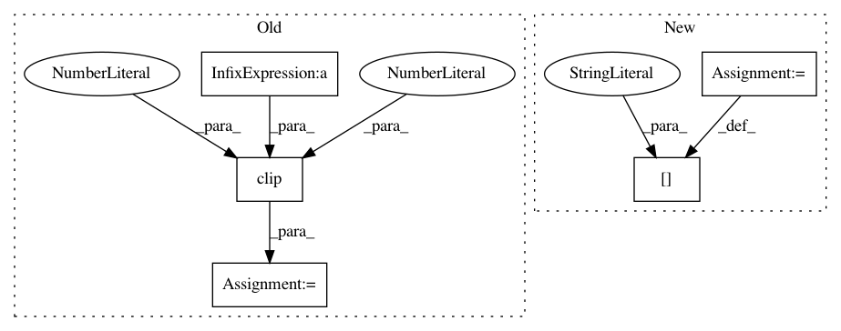

89d09e5bdcef7b225575988dcbc8732518318c87,chaco/transform_color_mapper.py,TransformColorMapper,_compute_normalized_data,#TransformColorMapper#Any#,134
Before Change
// initialization before range is connected to a data source).
norm_data = 0.5*ones_like(data_array)
else:
norm_data = clip((data_array - low) / range_diff, 0.0, 1.0)
if self.unit_func is not None:
norm_data = self.unit_func(norm_data)
After Change
norm_data = 0.5*ones_like(data_array)
else:
norm_data = empty(data_array.shape, dtype="float32")
norm_data[:] = data_array
norm_data -= low
norm_data /= range_diff
clip(norm_data, 0.0, 1.0, norm_data)
In pattern: SUPERPATTERN
Frequency: 3
Non-data size: 5
Instances
Project Name: enthought/chaco
Commit Name: 89d09e5bdcef7b225575988dcbc8732518318c87
Time: 2012-02-07
Author: cfarrow@enthought.com
File Name: chaco/transform_color_mapper.py
Class Name: TransformColorMapper
Method Name: _compute_normalized_data
Project Name: MIC-DKFZ/trixi
Commit Name: 0d39c9dc19388c18362897c83cebbe12a063a752
Time: 2019-06-14
Author: jens.petersen@dkfz.de
File Name: trixi/logger/visdom/pytorchvisdomlogger.py
Class Name: PytorchVisdomLogger
Method Name: show_image_grid_heatmap
Project Name: MIC-DKFZ/trixi
Commit Name: 0d39c9dc19388c18362897c83cebbe12a063a752
Time: 2019-06-14
Author: jens.petersen@dkfz.de
File Name: trixi/logger/file/pytorchplotfilelogger.py
Class Name: PytorchPlotFileLogger
Method Name: show_image_grid_heatmap